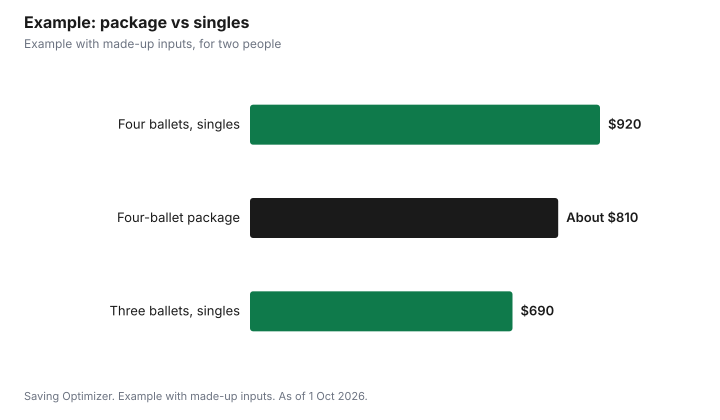

Entertainment · Canada
Theatre Subscription vs Single Tickets in Canada: When a Season Package Pays Off

A theatre or arts subscription is worth it if you would buy tickets to most of the shows in the package anyway, because the discount only counts on tickets you actually use. Canadian companies publish real savings: the National Ballet of Canada says subscribers save up to 50% compared with single tickets, and its build-your-own packages save up to 10%, 12% or 15% for three, four or five ballets. Subscribers also tend to get free or cheaper exchanges, better seats and discounts on extra tickets. If you only want one or two shows a year, single tickets, rush seats or age-based deals usually cost less in total.
Key takeaways
- Subscriptions pay off only on shows you would see anyway.
- National Ballet: save up to 50% as a subscriber; build-your-own 3, 4 or 5 ballets saves up to 10%, 12% or 15%.
- Canadian Opera Company: full-season subscribers get free exchanges and highest seating priority.
- TSO TSOUNDCHECK Pick 5 (ages 15 to 35) saves 20% versus TSOUNDCHECK singles.
- Exchange rules are often the biggest hidden benefit.
- Example with made-up inputs: a four-ballet package saves about $110 only if all four shows are wanted.
What a subscription gives you
Subscriptions ask you to commit to several shows before the season starts, and in return companies offer a mix of price discounts, seat priority and flexibility. The details differ by company, so compare only the benefits you would actually use. A discount card is worth nothing if you never eat near the theatre, while free exchanges can be worth a whole ticket to someone whose work schedule shifts. Payment plans do not lower the price, but they can make an early-bird package affordable without a credit card balance.
| Company | Price benefit | Exchanges | Other perks |
|---|---|---|---|
| National Ballet of Canada | Save up to 50% vs single tickets; build-your-own saves up to 10% to 15% | Free with at least 24 hours' notice | Payment plans, subscriber discount card, early access to extra tickets |
| Canadian Opera Company | Subscriber pricing plus a discount on extra tickets | Free on the full series; discounted fee on 4- and 3-opera packages | Highest seating priority on the full series |
| Toronto Symphony Orchestra (TSOUNDCHECK, 15 to 35) | Pick 5 from $27 Main Floor or $35 Mezzanine; 20% off vs TSOUNDCHECK singles | Fee-free (normally $10 per ticket, 48 hours' notice) | 20% off extra single tickets, subscriber discount card, coat check |
The National Ballet's two kinds of savings
The National Ballet of Canada says subscribers can save up to 50% compared with single tickets, depending on the package and seats. Its build-your-own option lets you pick three, four or five ballets and mix price zones, sitting in different parts of the theatre to fit a budget, with savings of up to 10%, 12% or 15% respectively. Subscribers can exchange to another performance free of charge with at least 24 hours' notice, can spread the cost with a payment plan, and get a subscriber discount card with offers from local businesses.
Canadian Opera Company packages
The Canadian Opera Company offers a full six-opera series as its best-value option, with free ticket exchanges and the highest seating priority, plus smaller four- and three-opera packages that come with a discounted exchange fee. All subscribers receive a discount on additional tickets. The company's site says single tickets start from $45. If you are under 30, compare a subscription with its Opera Under 30 tickets, which can be cheaper per show.
Toronto Symphony Orchestra for ages 15 to 35
The TSO's TSOUNDCHECK program for ages 15 to 35 has single tickets starting at $22. Its Pick 5 subscription lets you mix at least five Classics and Pops evening concerts from $27 a ticket on the Main Floor or $35 in the Mezzanine, which the TSO says saves 20% compared with TSOUNDCHECK single prices. Subscribers exchange without the usual $10 per-ticket fee and get 20% off regular single tickets for extra concerts when subscription pricing is not available. Single-ticket buyers can exchange with at least 48 hours' notice for $10 a ticket or return a ticket for a tax receipt.
How to find your break-even
Add up the single-ticket prices for the shows you are sure you would attend, then compare that with the package price. Shows in the package you would not have chosen count at zero value, not at their ticket price. Then add a value for flexibility: if your schedule often changes, free exchanges can save a ticket that would otherwise be wasted.
| If this is true | Lean toward |
|---|---|
| You want at least three shows from one company | Subscription |
| Your plans change often | Subscription with free exchanges |
| You only want one headline show | Single ticket |
| You are under 30 or 35 | Compare youth deals first |
| You like last-minute decisions | Rush or single tickets |
| You care about the same seats each time | Subscription |
Example with made-up inputs
These numbers are an example with made-up inputs. A couple likes ballet and considers a build-your-own package of four ballets. Single tickets in their chosen zone would cost $115 each, so four shows for two would be $920. With a 12% saving, the package costs about $810, saving about $110. But they only really want three of the four ballets; the fourth is worth little to them. Three single-ticket shows would cost $690. In that case the package costs $120 more than buying just the shows they want, unless the free exchanges or discount card are worth that much to them. If instead they want all four, the package saves them money.
| Option | Cost | Shows they value |
|---|---|---|
| Four ballets, single tickets | $920 | 3 of 4 |
| Four-ballet package at 12% off | About $810 | 3 of 4 |
| Three ballets, single tickets | $690 | 3 of 3 |

Other ways to pay less
- Look for age-based programs such as the TSO's TSOUNDCHECK, the National Ballet's DanceBreak or the COC's Opera Under 30.
- Check rush or standing-room tickets on the day.
- Choose weekday or matinee performances when the company prices them lower.
- Ask about returning unused tickets for a tax receipt, which some companies offer.
- Use the subscriber discount card on dinners you would buy anyway.
Steps
- List the shows you are sure you want this season.
- Price them as single tickets in the seats you would choose.
- Compare with the package price and the per-show discount.
- Value the exchange policy based on how often your plans change.
- Check youth, rush and matinee options before committing.
- Subscribe early if you want the best seats.
Common mistakes
- Counting every show in a package at full value.
- Ignoring exchange fees if your schedule is unpredictable.
- Buying a subscription when an under-30 or under-35 ticket is cheaper.
- Forgetting about payment plans when the upfront cost is the barrier.
More: opera, ballet and symphony deals for under 35 and Stratford and Shaw tickets.
Sources
- National Ballet of Canada, Subscriptions and Create Your Own Subscription, national.ballet.ca, as of 1 Oct 2026.
- Canadian Opera Company, Subscriptions, coc.ca, as of 1 Oct 2026.
- Toronto Symphony Orchestra, TSOUNDCHECK and Exchanges and Returns, tso.ca, as of 1 Oct 2026.
- Ticket prices in the example are made-up inputs.
Frequently asked questions
Is a theatre subscription worth it?
If you would buy most of the shows anyway, yes. Shows you would skip reduce or erase the saving.
How much do National Ballet subscribers save?
The company says up to 50% compared with single tickets; build-your-own packages of 3, 4 or 5 ballets save up to 10%, 12% or 15%.
Can subscribers exchange tickets?
National Ballet subscribers exchange free with at least 24 hours' notice; COC full-series subscribers get free exchanges; TSOUNDCHECK subscribers exchange without the $10 fee.
What is the TSO TSOUNDCHECK subscription?
For ages 15 to 35: pick at least five Classics and Pops concerts from $27 Main Floor or $35 Mezzanine, saving 20% versus TSOUNDCHECK singles.
Do COC subscribers get discounts on extra tickets?
Yes. All COC subscription packages include a subscriber discount on additional tickets.
Is a single ticket better for one show?
Usually, especially if you qualify for under-30 or under-35 pricing or rush tickets.
Researched and drafted with AI assistance and fact-checked against official Canadian sources. How we create content.
Disclosure: Saving Optimizer may earn a commission if a partner link is added later, such as a ticketing offer type. No partnership is claimed on this page. Education only.